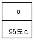
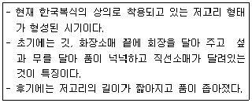
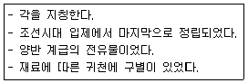

한복기능사 (2009-01-18 기출문제)
1과목: 임의 구분
1. 다음 중 견의 단백질에 해당되는 것은?
- 케라틴
- 세리신
- 피브로인
- 콜라겐
(정답률: 47%)

2. 삼베를 바느질할 때 주로 사용하는 재봉기 바늘은?
- 7호
- 9호
- 11호
- 14호
(정답률: 27%)
3. 아마 섬유의 특성이 아닌 것은?
- 습윤하면 강도가 약간 증가한다.
- 흡습과 건조속도는 면보다 느리다.
- 탄성이 나쁘다.
- 일광에 의해 쉽게 손상을 받는다.
(정답률: 42%)
4. 섬유의 흡습성이 큰 순서대로 나열된 것은?
- 양모＞견＞면
- 견＞양모＞면
- 면＞양모＞견
- 견＞면＞양모
(정답률: 29%)
5. 다음 중 재생섬유에 해당되지 않는 것은?
- 비스코스 레이온
- 구리암모늄레이온
- 카제인섬유
- 아크릴섬유
(정답률: 50%)
6. 다음 중 여름용 옷감은?
- 삼베, 모시, 안동포
- 공단, 양단, 모본단
- 광목, 당목, 포플린
- 자미사, 숙고사, 진주사
(정답률: 76%)
7. 안감의 설명으로 틀린 것은?
- 두꺼운 겉감에는 가볍고 얇은 감을 사용한다.
- 색은 겉감보다 연한 동색으로 하거나 보색으로 배색한다.
- 얇고 비치는 겉감에는 되도록 질감이나 조직이 같은 흰색의 안감으로 한다.
- 안감은 겉감보다 좀 빳빳한 감으로 해야 실루엣이 살아난다.
(정답률: 52%)
8. 다음 중 벌크 가공을 할 수 있는 섬유는?
- 면
- 견
- 양모
- 아크릴
(정답률: 55%)
9. 다음 중 식물성 셀룰로스 섬유가 아닌 것은?
- 종모섬유
- 암면섬유
- 인피섬유
- 과실섬유
(정답률: 40%)
10. 경사와 위사에 견사를 사용하여 평직으로 제직한 것으로 남,여 바지와 저고리 감으로 주로 사용하나 부드럽고 따뜻하여 여자들의 속옷감으로도 많이 쓰이는 것은?
- 갑사
- 부사견
- 항라
- 대화단
(정답률: 33%)
11. 전통적인 남자 어린이 한복의 색이 아닌 것은?
- 흰색 바지, 분홍색 저고리, 남색조끼
- 보라색 바지, 분홍색 저고리, 황색 조끼
- 흰색 바지, 연두색 저고리, 자주색 조끼
- 옥색바지, 분홍색 저고리, 연두색 조끼
(정답률: 46%)
12. 키가 작고 마른사람의 복식으로 적당한 것은?
- 너무 꼭 끼게 하지 말고 적당히 하되 넉넉하게 하는 편이 좋다.
- 저고리 깃을 조금 길게 단다.
- 뒷깃은 내려서 단다.
- 무늬는 될수록 가는 것이 좋다.
(정답률: 64%)
13. 디자인의 원리 중 색이나 선의 분할을 이용하여 회장을 다는 등 저고리의 면적을 조정하는 것에 해당하는 것은?
- 비례
- 조화
- 균형
- 착시
(정답률: 26%)
14. 회색을 흰색 바탕과 검정색 바탕에 놓았을 때 흰색 바탕의 회색이 어둡게 보이는 현상은?
- 채도 대비
- 색상대비
- 보색대비
- 명도 대비
(정답률: 38%)
15. 치마 주름이나 색동, 연속문양과 옷고름 등의 배열에서 찾아 볼 수 있는 디자인의 원리는?
- 비율
- 균형
- 리듬
- 강조
(정답률: 52%)
16. 다음 중 불안정과 초조감을 주기도 하며 이지적이고 경쾌함을 느낄 수 있는 선은?
- 수직선
- 지그재그선
- 사선
- 수평선
(정답률: 56%)
17. 조선시대의 복식의 특징이 아닌 것은?
- 중국 명나라 제도의 영향을 많이 받았다.
- 유교사상에 의한 생활감정에 따라 사대부의 복식은 활수형으로 변천하였다.
- 어느 시대보다 예의 관념이 엄격하였다.
- 귀족과 서민의 의복에 별다른 변화가 없었다.
(정답률: 48%)
18. 스캘럽(scallop)에 대한 설명으로 옳은 것은?
- 뚱뚱한 사람에게 사용하면 좋은 디테일로 체형의 결점을 감출 수 있다.
- 가슴이나 엉덩이 등 살이 많은 부위에 사용하면 결점이 감추어진다.
- 귀여운 소녀나 균형잡힌 젊은 층에게 옷의 가장자리나 도련 장식으로 사용하면 귀여움, 상냥한 느낌을 준다.
- 시원함, 단정함, 어두운 느낌을 나타내고 싶을 때 사용한다.
(정답률: 43%)
19. 다음 중 마직물에 해당되는 것은?
- 모본단
- 안동포
- 삼팔주
- 공단
(정답률: 59%)
20. 다음 중 명도가 가장 높은 것은?
- 5R 4/14
- 5R 8/3
- 5R 6/7
- 5R 5/10
(정답률: 35%)
2과목: 임의 구분
21. 다음 중 키가작고 뚱뚱한 체형에 알맞은 디자인은?
- 깃과 섶을 약간 넓게하고 저고리 길이와 품을 여유있게 디자인한다.
- 회장저고리나 진동선을 어깨허리 모양으로 만든 저고리를 이용하여 디자인한다.
- 저고리 길이와 깃을 약간 길게 하고 소매에 끝동을 달아 배래가 넓게 보이지 않도록 디자인 한다.
- 치마폭 사이에 바이어스를 대거나 수직선으로 장식다는 것으로 디자인 한다.
(정답률: 35%)
22. 튼튼하게 꿰매야 하는 솔기에 이용되며 바지 배래 솔기에 많이 사용되는 바느질은?
- 가름솔
- 홑솔
- 통솔
- 곱솔
(정답률: 35%)
23. 바지의 바느질 방법으로 옳은 것은?
- 시접은 작은 사폭 쪽으로 꺾어 다린다.
- 마루폭은 허리 쪽에서 부터 꺾어 다린다.
- 배래의 시접은 안감 쪽으로 꺾어 다린다.
- 허리의 시접은 허리 쪽으로 꺾는다.
(정답률: 36%)
24. 재봉기로 바느질할 때 주름에 대한 설명 중 틀린 것은?
- 풀치마의 주름 너비는 보통 0.5-1cm가 알맞다.
- 풀치마의 주름은 안자락 쪽에서 시작하여 겉자락 쪽을 향하여 잡아 가는 것이 편하다.
- 통치마의 경우 아귀를 튼 솔기의 시접은 주름의 방향과 같은 쪽을 향하도록 꺾는다.
- 풀치마의 주름 분을 계산할 때에는 앞트기 치마러리의 여밈을 위한 겹침분을 염두에 두고 계산한다.
(정답률: 33%)
25. 한복감에 풀먹이는 방법으로 틀린 것은?
- 풀을 곱게 풀어 고운체에 받쳐 놓는다.
- 풀 먹일 옷감은 바짝 마르게 하는 것이 좋다.
- 받쳐 놓은 풀에 옷감을 넣고 풀이 속까지 베어 들도록 골고루 문질러 꼭 짠다.
- 다듬이질 할 옷감은 풀을 세게 먹이고 다림질 할 옷감은 약하게 먹이는 것이 좋다.
(정답률: 44%)
26. 다음 중 윗실 거는 순서의 배열로 옳은 것은?
- 실패꽂이-윗실조절기-윗실안내-실채기-바늘
- 실패꽂이-윗실안내-윗실조절기-실채기-바늘
- 실패꽂이-윗실안내-실채기-윗실조절기-바늘
- 실패꽂이-실채기-윗실안내-윗실조절기-바늘
(정답률: 49%)
27. 재봉기의 부품 중 다음 그림에 해당되는 것은?(문제 오류로 그림이 없습니다. 정확안 그림 내용을 아시는분께서는 자유게시판 또는 관리자 메일로 부탁 드립니다. 정답은 2번 입니다.)
- 바늘판
- 침판
- 각판
- 미끄럼판
(정답률: 49%)
28. 엷은 합성섬유 직물을 재봉할 때 1cm당 바느질 땀수는?
- 8~9
- 6~7
- 4~5
- 2~3
(정답률: 45%)
29. 밑실이 끊어지는 원인 중 해당되지 않는 결함은?
- 바늘판
- 톱니
- 노루발
- 혹
(정답률: 44%)
30. 견 섬유은 안전 다림질 온도로 옳은 것은?
- 120
- 150
- 200
- 230
(정답률: 33%)
31. 건식 세탁의 특징에 해당되는 것은?
- 의복의 모양이 변하지 않고 바탕이 상하지 않는다.
- 친수성 오염에 효과적이다.
- 세탁방법이 간단하고 건조가 느리다.
- 세제의 값이 싸고 구하기 쉽다.
(정답률: 57%)
32. 다음 기호의 표시 설명으로 틀린 것은?

- 물의 온도 95도c를 표준으로 세탁할 수 있다.
- 세제의 종류에 제한을 받지 않는다.
- 세탁기로 세탁할 수 있다.
- 손세탁을 할 수 없다.
(정답률: 40%)
33. 옷에 쇳물이 묻었을 때 얼룩빼기 처리 방법으로 가장 옳은 것은?
- 비눗물이나 암모니아수로 처리한다.
- 휘발유. 벤젠으로 녹여낸 후 중성세제 비눗물로 처리한다.
- 과산화수소로 처리한다.
- 수산액에 처리한다.
(정답률: 42%)
34. 의복의 내구적 성능 중 열에 의해 연화되는 성질을 가지는 섬유는?
- 견
- 레이온
- 양모
- 아세테이트
(정답률: 34%)
35. 일반적인 한복 보관법의 설명으로 틀린 것은?
- 견직물이나 모직물은 직물 특성상 건조한곳에 그냥 보관한다.
- 그대로 보관해야 할 옷과 뜯어서 보관할 옷을 구분한다.
- 만일 해충이 생겼을 때는 열에 강한 직물인 경우 뜨거운 다림질을 해 준 뒤 신문지에 싸서 보관한다.
- 거풍한 옷은 솔로 털어 주고 잘 개켜서 보관한다.
(정답률: 38%)
36. 전통 금박에 관한 설명으로 틀린 것은?
- 공정이 까다롭고 시간이 많이 걸린다.
- 예전에는 상류층에만 허용되었다.
- 한복의 독특한 분위기를 연출하여 매우 화려하다.
- 물빨래를 할 수 있다.
(정답률: 56%)
37. 다음 중 여자 단속곳을 제작할 때 필요하지 않은 원형 제도는?
- 큰폭
- 밑바대
- 작은 폭
- 마루폭
(정답률: 46%)
38. 성인 남자 저고리 제작에 필요한 옷감분량으로 옳은 것은?
- 50~55cm의 너비:(길이×4)+(소매너비×4)+시접
- 50~55cm의 너비:(길이×2)+(소매너비×4)+시접
- 110~120cm의 너비:(길이×2)+(소매너비×4)+시접
- 110~120cm의 너비:(길이×2)+시접
(정답률: 25%)
39. 남자조끼 마름질 방법에 대한 설명으로 틀린 것은?
- 조끼는 안단과 주머니분이 더 필요하다.
- 겉감으로 안단과 입술감을 준비한다.
- 너비가 110cm일 때 옷감 소요량은 (조끼길이+시접)이다.
- 각 부분의 시접은 1~1.5cm정도로 한다.
(정답률: 40%)
40. 스란치마와 대한치마를 구별하는 기준이 되는 것은?
- 스란단 수
- 치마폭 수
- 치마의 길이
- 치마허리의 형태
(정답률: 49%)
3과목: 임의 구분
41. 당의 제작시 뒷중심선을 겉과 겉이 맞닿게 접어박은 다음, 시접을 입어서 오른쪽으로 가도록 꺾는 바느질 방법은?
- 섶달기
- 등솔박기
- 어깨솔기박기
- 배래박기
(정답률: 42%)
42. 저고리 앞면의 좌우 중심선 밖에 붙여지는 것으로 기능적으로는 앞을 여미고 미적으로는 변화를 발생시키는 저고리 구성에서 가장 기본적인 것은?
- 깃
- 섶
- 옷고름
- 중심선
(정답률: 41%)
43. 한복을 구성할 때 반드시 갖추어야 할 요소들로만 나열된 것은?
- 착용자, 착용조건, 디자인, 옷감
- 디자인, 봉제, 가격, 유통
- 옷감, 장신구, 봉제, 가격
- 제작, 디자인, 가격, 유통
(정답률: 50%)
44. 봉제시 바늘이 건너뛸 경우 원인이 아닌 것은?
- 바늘 밑판에 불순물이 끼었을 경우
- 바늘이 잘못 끼워졌을 경우
- 실이 잘못 끼워졌을 경우
- 톱니가 내려져 있을 경우
(정답률: 36%)
45. 다음 중 여자 저고리 제작시 가슴이 큰 체형을 보완하기 위한 디자인으로 틀린 것은?
- 앞 길이를 짧게 한다.
- 섶 분량을 넉넉히 한다.
- 치마 말기를 넓게 한다.
- 진한색의 저고리가 체형 보완에 효과적이다.
(정답률: 47%)
46. 다음 설명에 해당되는 저고리가 착용된 시대는?

- 삼국시대 이전
- 삼국시대
- 조선시대
- 개화기
(정답률: 52%)
47. 조선시대 백관복 중 방심곡령이 있었던 복식은?
- 조복
- 제복
- 상복
- 공복
(정답률: 25%)
48. 삼회장 저고리가 해당되는 복식의 시대는?
- 삼국시대
- 고려시대
- 조선시대
- 개화기이후
(정답률: 47%)
49. 우리옷의 풍성한 기풍을 엿볼 수 있는 대표적인 외출복은?
- 단령
- 도포
- 두루마기
- 배자
(정답률: 37%)
50. 가장 크고 화려한 것으로 조선시대 궁중에서 패용하던 노리개는?
- 대삼작 노리개
- 중삼작 노리개
- 소삼작 노리개
- 단작노리개
(정답률: 52%)
51. 외명부들이 궁중을 출입할 때 가체의 일종으로 낭자를 소라껍질처럼 크게 틀어 쪽진 머리에 가식한 머리모양은?
- 조짐머리
- 첩지머리
- 땋은머리
- 새앙머리
(정답률: 36%)
52. 조선 시대 여자들이 대표적인 머리 모양이 아닌것은?
- 얹은머리
- 쪽진머리
- 땋은머리
- 어여머리
(정답률: 33%)
53. 소매가 넓고 전삼(展杉)이 붙어 있는 의복은?
- 학창의
- 첩리
- 직령포
- 도포
(정답률: 36%)
54. 백관복 중 융복 착용과 관계가 없는 것은?
- 왕 행차에 수행할 때
- 외국에 사신으로 파견될 때
- 국난을 당하였을 때
- 입시할 때나 공무를 볼 때
(정답률: 59%)
55. 활옷에 대한 설명으로 옳은 것은?
- 계급에 따라 금박문양을 다르게 사용하여 궁중 원삼과 구별하였다.
- 일반인들은 혼례시에만 착용할 수 있었다.
- 주로 상류계층에서 착용했던 예복이었는데 후에 서민층의 혼례복이 되었다.
- 예복 중에서 가장 간편하고 모양이 아름답다.
(정답률: 40%)
56. 개화기 남자 복식 중 상의와 관계없는 것은?
- 마고자
- 조끼
- 속적삼
- 행전
(정답률: 44%)
57. 의복의 종류와 형태가 옳게 짝지어진 것은?
- 키톤, 로브 - 관두형
- 두루마기 기모노 - 체형형
- 키톤, 사리 - 권의형
- 로브, 기모노 - 전개형
(정답률: 40%)
58. 통일 신라시대의 복식 중 소매를 짧게 한 반소매형의 복식은?
- 복두
- 단의
- 반비
- 표
(정답률: 40%)
59. 다음 설명에 해당되는 관모는?

- 흑립
- 초립
- 패랭이
- 정자관
(정답률: 38%)
60. 조선 말기 궁중에서 사용하던 예복용 치마로 대란치마 위에 덧입었던 치마는?
- 무지기 치마
- 대슘치마
- 스란치마
- 전행웃치마
(정답률: 24%)